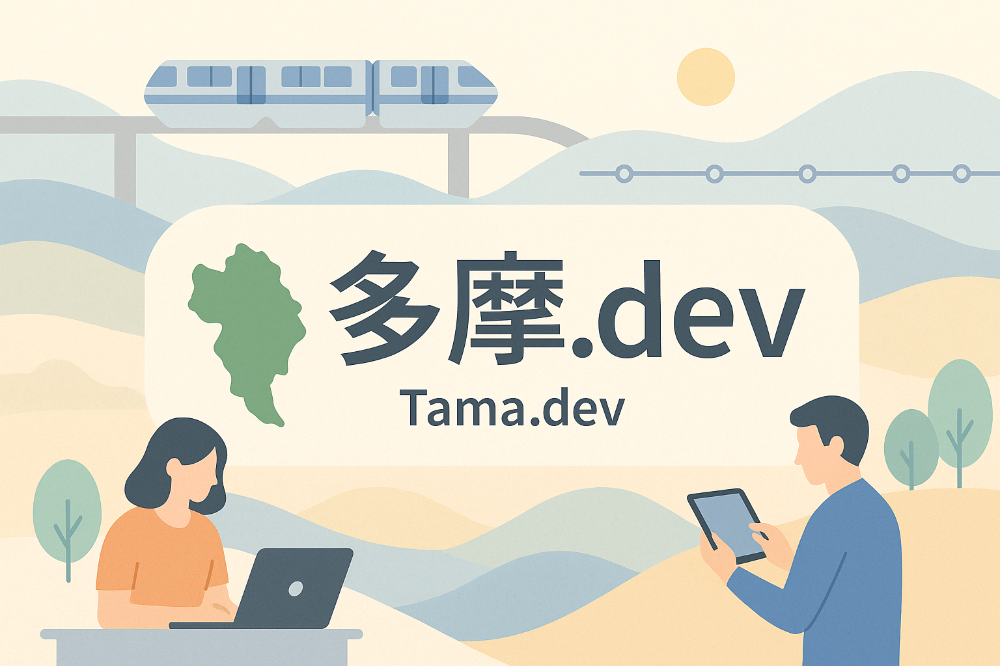

多摩.dev
多摩地域のエンジニアが、気軽に集まり、学び、つながるコミュニティです。
初参加歓迎です。LT登壇なしでも参加できます。多摩地域外からの参加も歓迎です。
次回開催情報
2026/09/19（土） 関戸公民館＠聖蹟桜ヶ丘掲載情報
公式リンク
発起の想い
コミュニティについて
イベント・地域マップ
ご協力のお願い
お問い合わせ
運営
髙橋直規（幡ヶ谷亭直吉）
多摩.devの発起人・運営者です。活動内容やプロフィールは個人サイトにまとめています。